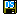
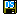

| Prev - Next - Down | SDMetrics - the UML design measurement tool |
 button. To export the comparative
descriptive statistics table, click the  button. This will open an
export dialog where you can specify file names, data format, and
whether to export to single or separate files (see
Section 4.15.1 "Exporting Data Tables").
button. To export the comparative
descriptive statistics table, click the  button. This will open an
export dialog where you can specify file names, data format, and
whether to export to single or separate files (see
Section 4.15.1 "Exporting Data Tables").
| Prev | Up | Next |
| Section 4.9.4 "Mapping Design Elements" | Contents | Section 4.10 "The View 'Relation Matrices'" |